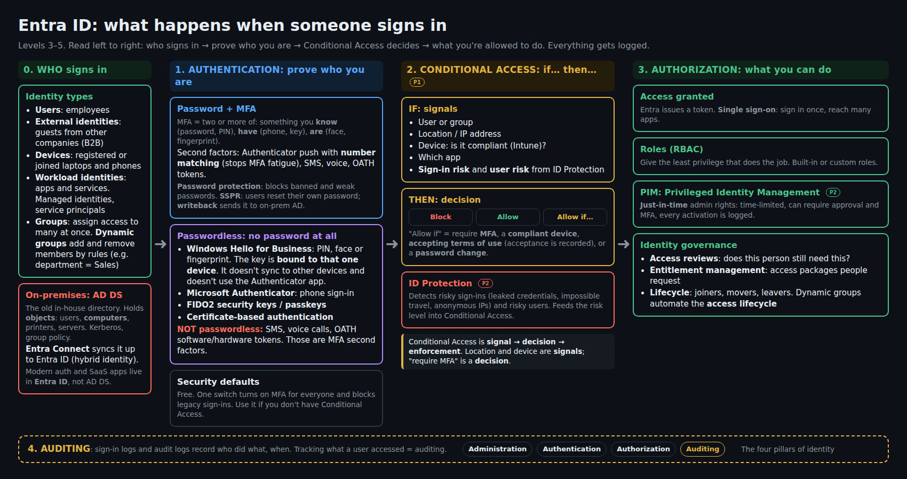
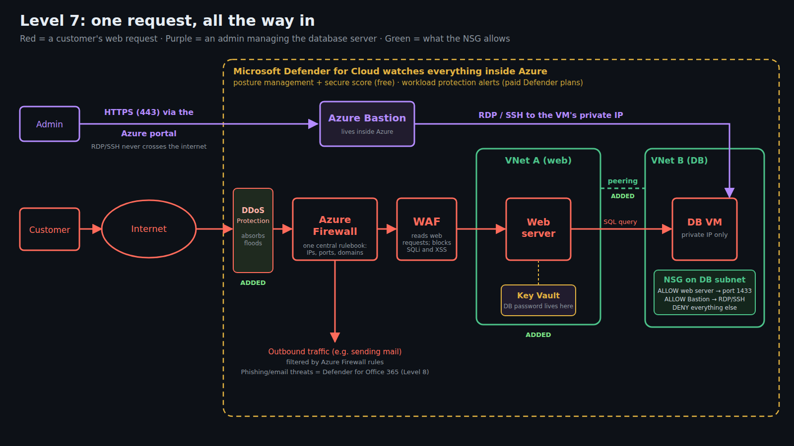
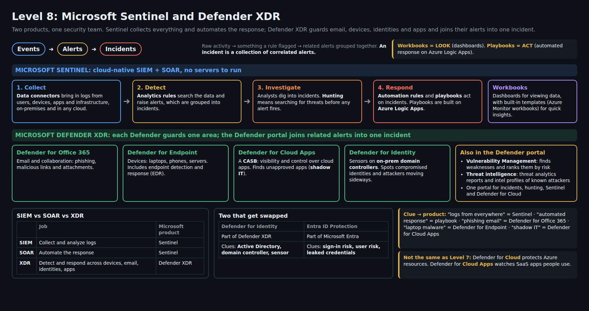
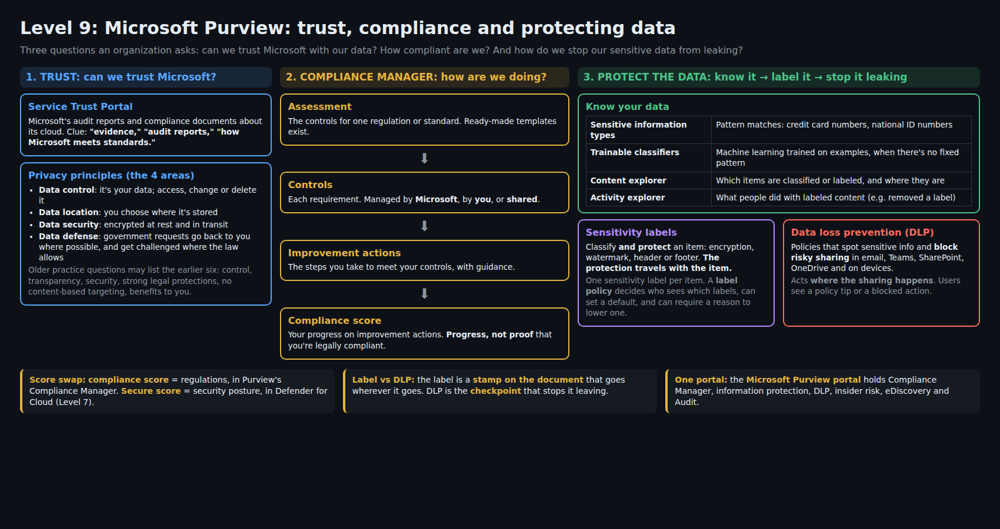
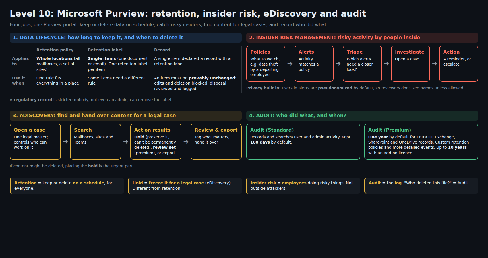

Study diagrams
One page per topic: every exam clue word, shown as a flow you can redraw from memory. Free, like the rest of Rukeios Study.
How to use them: study one for 10 minutes, close it, redraw it from memory on paper, then compare. If you can draw it, you can answer the questions about it.
SC-900

Entra ID sign-in flowLevels 3–5 · identity types, MFA, passwordless, Conditional Access, PIM, auditing

One request, all the way inLevel 7 · DDoS, Azure Firewall, WAF, VNets, NSG, Bastion, Key Vault, Defender for Cloud

Sentinel and Defender XDRLevel 8 · events → alerts → incidents, workbooks vs playbooks, the Defender family

Purview: trust, compliance, protecting dataLevel 9 · Service Trust Portal, Compliance Manager, labels vs DLP

Purview: retention, insider risk, eDiscovery, auditLevel 10 · retention vs holds, Audit Standard vs Premium